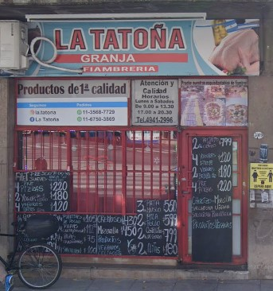

En La Tatoña vendemos productos de granja, fiambrería y productos veganos, los mismos se pueden encontrar dentro de la parte "Productos", en la parte superior de la página.
Imagen de cómo se ve el local desde la calle:
